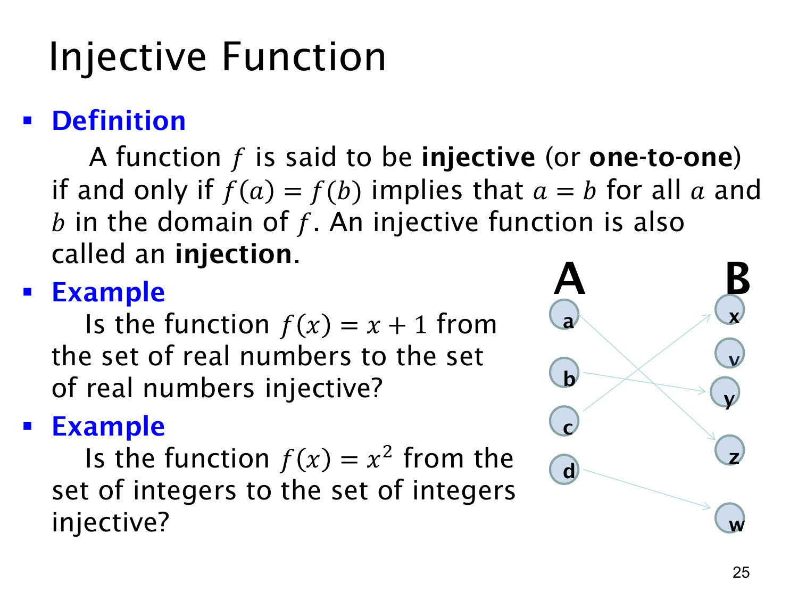

L1.4 · 第 25 页讲解原文
查看这一页课件

单射：不同输入不能合到同一输出
函数 f 是单射（injective，或 one-to-one），当且仅当对定义域中的任意 a,b，
f(a)=f(b)⟹a=b.
这句话的等价理解是：只要 a=b，就必须有 f(a)=f(b)。函数定义本来要求“每个输入恰好一个输出”；单射进一步限制不同输入之间不能撞到同一个输出。课件右边的箭头图中，左侧不同元素的箭头指向右侧不同元素，且右侧有元素 v 没有箭头指入；这仍可以是单射，说明单射不要求用完陪域。
例一：f:R→R，f(x)=x+1。若 f(a)=f(b)，则 a+1=b+1，两边减去 1 得 a=b，所以它是单射。
例二：f:Z→Z，f(x)=x2。取两个不同输入 1 与 −1，有 f(1)=1=f(−1)，所以它不是单射。否定单射只需找出一对不同输入得到同一输出，不必穷举所有整数。
判断单射要始终看清定义域。平方规则在全体整数上不是单射；若把定义域改成非负整数，便不会再有 a 与 −a 同时出现的撞值情况。但本页第二例的定义域明确是 Z，因此答案是否定的。